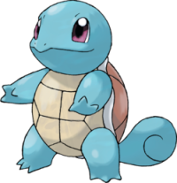
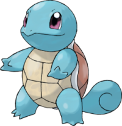
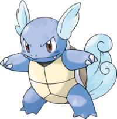
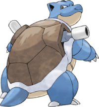

=======

>>>>>>> 8476fe016fa8297c915115b1a2d246895171e0c5
=======

>>>>>>> 8476fe016fa8297c915115b1a2d246895171e0c5
Carapuce - 007
Nom Anglais : Squirtle
Nom Original : Zenigame, ゼニガメ
Génération : Première
Type : Eau
Catégorie : Pokémon Minitortue
Sexe : Femelle : 12,5% | Mâle : 87,5%
Description : Carapuce est une petite tortue bipède de couleur bleue. Il possède une carapace brune au pourtour blanc, beige au niveau du ventre. Ses yeux sont grands et violacés. Il a une queue enroulée sur elle-même formant une spirale. Il possède quatre pattes avec chacune trois doigts. Sa carapace, molle à la naissance, durcit avec le temps et lui sert à se protéger pour lancer ensuite des jets d'eau ou d'écume, mais aussi à améliorer son hydrodynamisme.
Carapuce - 007
Carabaffe - 008
Tortank - 009